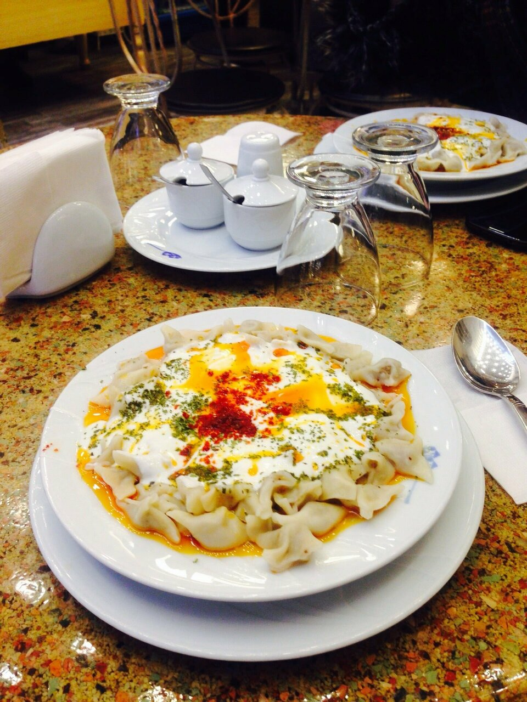
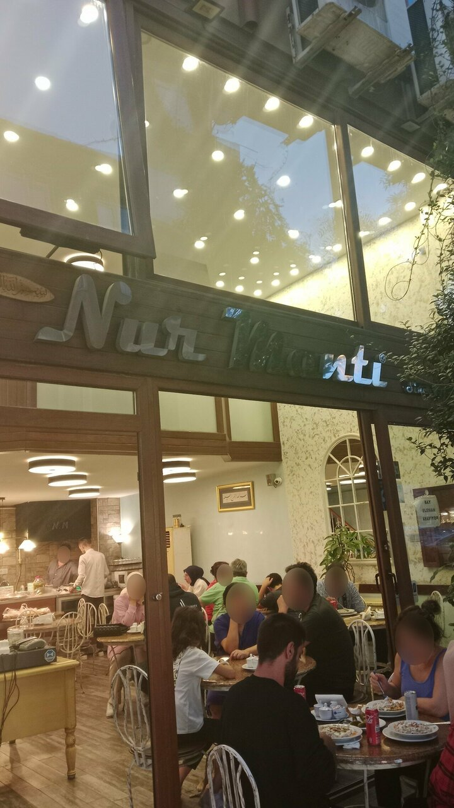
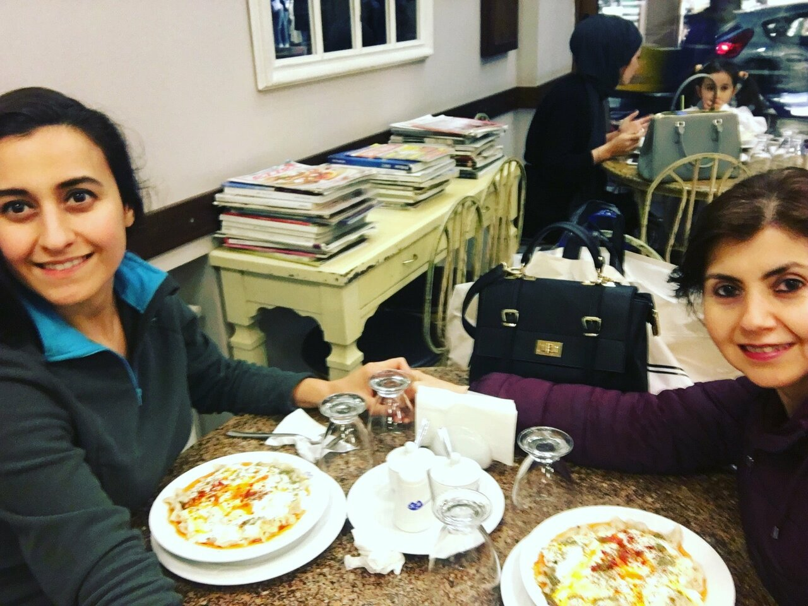
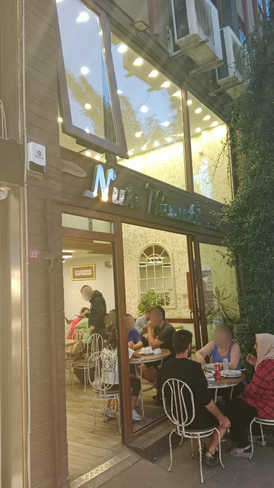
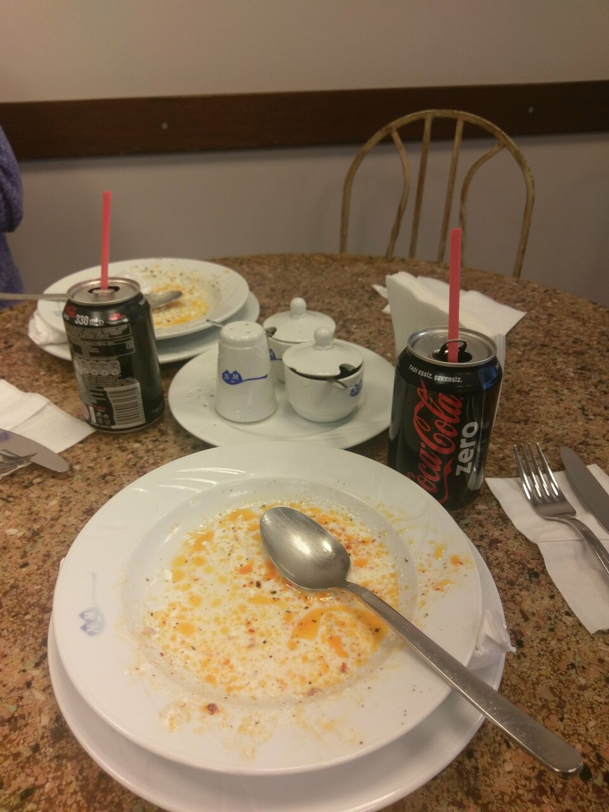
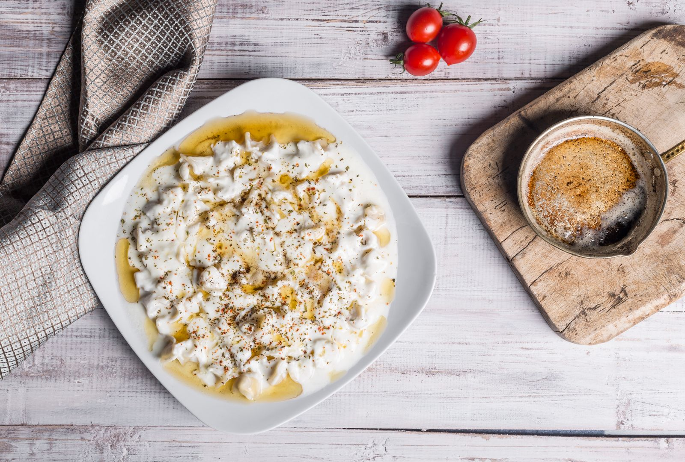

Çıtır Mantı
Altın rengi kızarmış mantı; yağ çekmeden çıtır, içi etli. Karışık tabağın vazgeçilmezi.

Pendik · Gelenek
El emeği mantının asil hali.
Pendik Çarşı’da, yıllardır aynı özenle açılan hamur; sarımsaklı yoğurt ve kızgın tereyağının soylu birleşimi.
Hikâyemiz
Misafirlerimizin diliyle: “Böyle eski toprak esnaf çok kalmadı.” Nur Mantı, Pendik’te uzun yıllardır aynı lezzeti koruyan bir aile sofrasıdır. Çocukluğundan beri gelenler, on beş, yirmi yıl sonra aynı tadı bulduğunu söyler — çünkü burada değişen moda değil, değişmeyen eldir.
Haşlama veya çıtır; bol sarımsaklı veya karışık. Yanında çiğ börek, içli köfte ve ev baklavası. İki katlı, temiz, samimi bir mekân; personeli güler yüzlü, servisi özenli. Bağdat Caddesi’nde bile böylesini bulamazsınız, diyenler var.

“İstanbul’un en iyi mantıcısı. Çocukluğumun mantıcısı.”
Google misafir yorumlarından
Mekân
İki katlı salon, temiz mutfak, Pendik Çarşı’nın kalbinde.




Misafirler
Gerçek Google yorumlarından seçilmiş satırlar.
“Pendik’te uzun yıllardır hizmet veren bir yer. Müdavimi çoktur. Mantıda ve çibörekte lezzeti tartışmasızdır, temiz ve taze ürünler kullanılır. Mekan 2 katlı… Personel de harikadır.”
“Böyle eski toprak esnaf çok kalmadı. Mantı çok lezzetli.”
“15 yıldır gideriz buraya; mantısında ne bir değişim ne de bozulma var. Çocukluğumun mantıcısı.”
“İsim vermeyeyim ancak şubeleri olan o mantıcıdan bin kat daha iyi… Bağdat Caddesinde bile böylesini bulamazsınız.”
“Bol sarımsaklı mantı, çiğ börek ve içli köfte mükemmel combo. Yılların lezzeti oturmuş.”
“Hayatımda yediğim en güzel mantı. Servis kaliteli. Çay ikramı çok lezzetli. Başka mantıcıya gitmeyin.”
Ziyaret
Pazar hariç her gün. Yoğun saatlerde yer için aramanız önerilir.